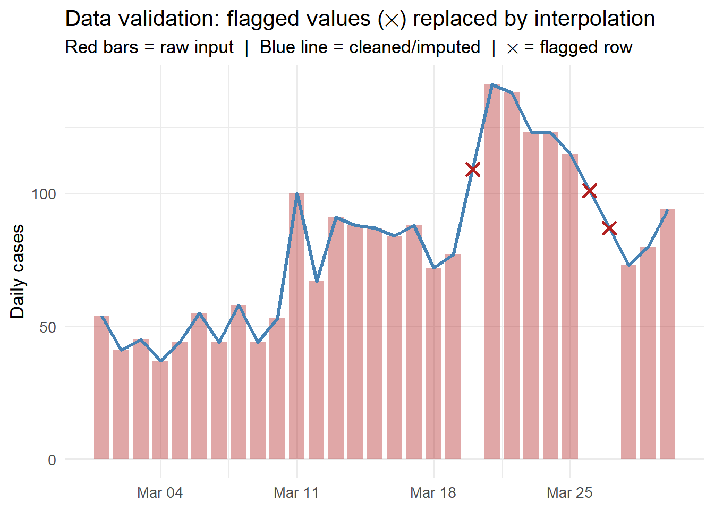

library(ggplot2)
library(dplyr)
# Simulate incoming surveillance data with deliberate errors
set.seed(42)
n <- 30
dates <- seq(as.Date("2024-03-01"), by = "day", length.out = n)
cases <- c(rpois(10, 45), rpois(9, 80), -5, rpois(5, 120),
NA, 99999, rpois(3, 90))
df_raw <- data.frame(
date = dates,
location_id = "district_a",
new_cases = cases,
source = "surveillance_v1"
)Data Validation: Catching Bad Surveillance Data Before It Corrupts Your Model
Schema checks, range guards, and anomaly flags at the ingestion boundary — because garbage in means garbage forecasts out. Skill 4 of 20.
business skills
data validation
data quality
R
surveillance
1 The silent failure mode
The EnKF from Post 4 receives daily case counts and updates its state estimate. What happens when the surveillance system sends a negative count (database export error), a missing row (reporting gap), or a value of 99999 (sentinel for “unknown”)? The filter silently produces a nonsensical state estimate, which propagates into the 14-day forecast, which the health minister uses to decide whether to close schools.
Data validation (1) is the defensive layer between raw surveillance feeds and your model engine. It is not glamorous, but it is the difference between a system that fails loudly and safely versus one that fails silently and expensively.
2 The validation contract
Every data ingestion point should enforce:
- Schema — required columns present, correct types
- Range — values within physically plausible bounds
- Completeness — no unexpected gaps in the time series
- Consistency — values coherent with recent history (no 10× jumps without a flag)
- Provenance — source, submission timestamp, data version recorded
3 Building a validation function
validate_surveillance <- function(df,
max_plausible = 50000,
max_jump_ratio = 10,
sentinel_values = c(99999, -1, 9999)) {
issues <- list()
# 1. Required columns
required <- c("date", "location_id", "new_cases")
missing_cols <- setdiff(required, names(df))
if (length(missing_cols) > 0) {
issues[["missing_columns"]] <- missing_cols
}
# 2. Missing values
na_rows <- which(is.na(df$new_cases))
if (length(na_rows) > 0) {
issues[["missing_values"]] <- data.frame(
row = na_rows, date = df$date[na_rows]
)
}
# 3. Negative counts
neg_rows <- which(!is.na(df$new_cases) & df$new_cases < 0)
if (length(neg_rows) > 0) {
issues[["negative_counts"]] <- data.frame(
row = neg_rows, date = df$date[neg_rows],
value = df$new_cases[neg_rows]
)
}
# 4. Sentinel values
sentinel_rows <- which(df$new_cases %in% sentinel_values)
if (length(sentinel_rows) > 0) {
issues[["sentinel_values"]] <- data.frame(
row = sentinel_rows, date = df$date[sentinel_rows],
value = df$new_cases[sentinel_rows]
)
}
# 5. Implausibly large values
big_rows <- which(!is.na(df$new_cases) & df$new_cases > max_plausible)
if (length(big_rows) > 0) {
issues[["implausible_values"]] <- data.frame(
row = big_rows, date = df$date[big_rows],
value = df$new_cases[big_rows]
)
}
# 6. Anomalous jumps (consecutive-day ratio)
clean_cases <- df$new_cases
clean_cases[is.na(clean_cases) | clean_cases < 0 |
clean_cases %in% sentinel_values] <- NA
ratio <- clean_cases[-1] / pmax(clean_cases[-length(clean_cases)], 1)
jump_rows <- which(!is.na(ratio) & ratio > max_jump_ratio) + 1
if (length(jump_rows) > 0) {
issues[["anomalous_jumps"]] <- data.frame(
row = jump_rows, date = df$date[jump_rows],
value = df$new_cases[jump_rows],
ratio = round(ratio[jump_rows - 1], 1)
)
}
list(n_rows = nrow(df), n_issues = length(issues), issues = issues)
}
result <- validate_surveillance(df_raw)
cat(sprintf("Rows: %d | Issue types found: %d\n",
result$n_rows, result$n_issues))Rows: 30 | Issue types found: 4for (nm in names(result$issues)) {
cat("\n Issue:", nm, "\n")
print(result$issues[[nm]])
}
Issue: missing_values
row date
1 26 2024-03-26
Issue: negative_counts
row date value
1 20 2024-03-20 -5
Issue: sentinel_values
row date value
1 27 2024-03-27 99999
Issue: implausible_values
row date value
1 27 2024-03-27 99999# Apply cleaning: replace flagged values with NA for imputation
df_clean <- df_raw
flag_rows <- c(
result$issues$missing_values$row,
result$issues$negative_counts$row,
result$issues$sentinel_values$row,
result$issues$anomalous_jumps$row
)
flag_rows <- unique(flag_rows[!is.na(flag_rows)])
df_clean$new_cases[flag_rows] <- NA
df_clean$flagged <- seq_len(nrow(df_clean)) %in% flag_rows
# Simple linear interpolation for missing values
df_clean$new_cases_imputed <- df_clean$new_cases
na_idx <- which(is.na(df_clean$new_cases_imputed))
if (length(na_idx) > 0) {
df_clean$new_cases_imputed <- approx(
x = seq_len(nrow(df_clean))[!is.na(df_clean$new_cases)],
y = df_clean$new_cases[!is.na(df_clean$new_cases)],
xout = seq_len(nrow(df_clean))
)$y
}
ggplot(df_clean, aes(x = date)) +
geom_col(aes(y = pmax(0, new_cases, na.rm = TRUE)),
fill = "firebrick", alpha = 0.4, width = 0.8) +
geom_line(aes(y = new_cases_imputed),
colour = "steelblue", linewidth = 1.2) +
geom_point(data = df_clean[df_clean$flagged, ],
aes(y = new_cases_imputed),
shape = 4, size = 3, colour = "firebrick", stroke = 1.5) +
labs(x = NULL, y = "Daily cases",
title = "Data validation: flagged values (✕) replaced by interpolation",
subtitle = "Red bars = raw input | Blue line = cleaned/imputed | ✕ = flagged row") +
theme_minimal(base_size = 13)
4 Validation in the Python ingestion pipeline
For the production pipeline (FastAPI + TimescaleDB), use Pydantic to enforce schema and ranges at the API boundary:
from pydantic import BaseModel, Field, field_validator
from datetime import date
from typing import Optional
class ObservationRecord(BaseModel):
date: date
location_id: str = Field(min_length=1, max_length=64)
new_cases: int = Field(ge=0, le=50000)
source: Optional[str] = None
@field_validator("new_cases")
@classmethod
def not_sentinel(cls, v):
sentinels = {99999, 9999, -1}
if v in sentinels:
raise ValueError(f"Sentinel value {v} not allowed")
return vAny record that fails validation returns HTTP 422 with a clear error message — it never touches the database.
5 Validation as a service feature
Data quality reporting is itself a product feature clients value. Include in your dashboard:
- Completeness score: % of expected daily records received
- Anomaly log: timestamped record of all flagged values and how they were handled
- Imputation transparency: where were gaps filled, and how
This turns a defensive engineering practice into a visible trust signal.
6 References
1.
Stodden V, Miguez S. Best practices for computational science: Software infrastructure and environments for reproducible and extensible research. Journal of Open Research Software. 2014;2(1):e21. doi:10.5334/jors.ay